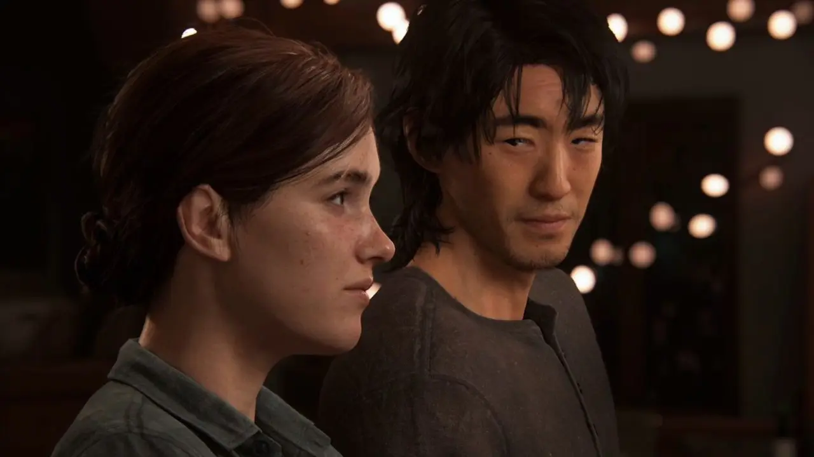

Sobre os personagens
Um dos personagens de The Last of Us
Ellie
Uma das protagonistas do título, a narrativa do primeiro jogo gira em torno da segurança da garota de 14 anos. Joel recebe, sem muita animação, a missão de levá-la até os Vagalumes pois, segundo Marlene, ela é a chave para a cura do fungo que ameaça a humanidade.
Joel
Quando o surto do fungo cordyceps ocorreu, Joel levava uma vida normal e celebrava seu aniversário. De repente, tudo mudou na vida do outro personagem principal da trama. Com o tempo, Joel se distanciou de seu irmão Tommy, se juntou a Tess e virou um contrabandista. Após encontrar Marlene em uma resolução de negócios nada amigável, ele recebe a missão de escoltar Ellie até os Vagalumes.
Tommy
Irmão mais novo de Joel, Tommy esteve ao seu lado bem no início da infestação. Após alguns desentendimentos, voltam a se encontrar no futuro, com o protagonista cobrando favores para levar Ellie aos Vagalumes.
Abby
Filha de um cirurgião assassinado por Joel, Abby faz parte dos Lobos, um grupo militar com base em Washington. Ao lado de Manny e seus outros companheiros, ela sai de Seattle rumo a Jackson em busca de vingança. Por mais que pareça uma antagonista para muitos, a interpretação do game coloca ela como uma das principais e mais marcantes personagens de The Last of Us mesmo que não tenha aparecido no início da narrativa.
Dina
Dina é a namorada de Ellie e companheira da protagonista durante a sua busca por respostas. O final do game deixa um questionamento sobre o estado da relação das duas.
Jesse
Jesse, o ex-namorado de Dina, após os acontecimentos em Jackson participa de parte da busca por vingança de Ellie em Seattle. Apesar de pouco tempo de tela, é muito importante em determinados momentos da história.